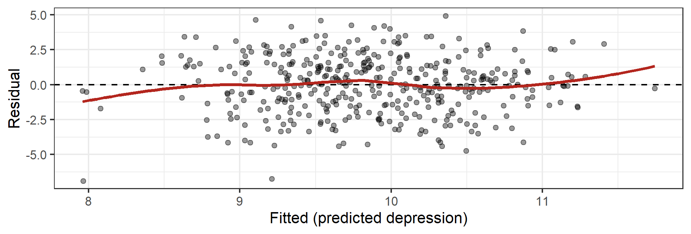

Week 07: Variability & Model Fit
Date: October 8, 2026
Today…
How good is this model, actually?
- Where the variance goes: \(SS_{total} = SS_{model} + SS_{residual}\)
- R², one more time — and what it is not
- The residual standard error: your typical miss, in real units
- The F test as a ratio
- Why R² can only go up, and what to use instead
- 👀 A sneak peek at two predictors
Our data: the ASAP study 😴
400 adolescents, measured on sleep, stress, and mood.
vars n mean sd median min max range skew kurtosis se
T1_SleepDur 1 400 9.44 1.00 9.41 6.45 12.35 5.90 0.16 -0.25 0.05
T1_PeerStress 2 400 7.93 1.77 7.89 2.86 13.34 10.48 0.23 0.21 0.09
T1_AcadStress 3 400 5.02 1.83 4.97 -0.35 10.63 10.98 0.07 -0.12 0.09
T1_Dep 4 400 9.84 2.15 10.05 1.08 15.29 14.21 -0.35 0.25 0.11Research question: Does how long adolescents sleep predict depressive symptoms?
Part 1: Where Does the Variance Go?
Start with the dumbest possible model
Suppose you had no predictor at all. What is your best guess for anyone’s depression score?
How wrong is that model? Add up every squared miss:
\[SS_{total} = \sum(Y_i - \bar{Y})^2 = 1840.5\]
This is the total variability we are trying to account for. Everything from here is about shrinking it.
Now add a predictor
# A tibble: 2 × 5
term estimate std.error statistic p.value
<chr> <dbl> <dbl> <dbl> <dbl>
1 (Intercept) 15.0 0.985 15.3 1.000e-41
2 T1_SleepDur -0.549 0.104 -5.30 1.96 e- 7Each additional hour of sleep is associated with 0.55 fewer points of depression.
But our question today is different: how much better is this line than the mean?
Three distances, one observation
For any single adolescent:
\[\underbrace{Y_i - \bar{Y}}_{\text{total}} = \underbrace{\hat{Y_i} - \bar{Y}}_{\text{model}} + \underbrace{Y_i - \hat{Y_i}}_{\text{residual}}\]
- Total: how far this person is from the overall mean
- Model: how far the line moved them from the mean
- Residual: how far the line still missed
Square them, add them up across all 400 people, and the same decomposition holds:
\[SS_{total} = SS_{model} + SS_{residual}\]
See it in the numbers
Analysis of Variance Table
Response: T1_Dep
Df Sum Sq Mean Sq F value Pr(>F)
T1_SleepDur 1 121.16 121.16 28.045 0.0000001965 ***
Residuals 398 1719.39 4.32
---
Signif. codes: 0 '***' 0.001 '**' 0.01 '*' 0.05 '.' 0.1 ' ' 1- \(SS_{model}\) = 121.2 — variability the line accounts for
- \(SS_{residual}\) = 1719.4 — variability it does not
- Together: 121.2 + 1719.4 = 1840.5 = \(SS_{total}\) ✅
R² is just a share
\[R^2 = \frac{SS_{model}}{SS_{total}} = \frac{121.2}{1840.5} = .066\]
# A tibble: 1 × 5
r.squared adj.r.squared sigma statistic p.value
<dbl> <dbl> <dbl> <dbl> <dbl>
1 0.0658 0.0635 2.08 28.0 0.0000001966.6% of the variability in depression is accounted for by sleep duration.
Which means 93.4% is not. Both halves of that sentence are the finding.
Small R², strong evidence
R² = .066
Sleep duration tells us very little about any individual adolescent’s depression.
p < .001
With n = 400, we are confident the slope is not zero.
Important
These are answers to different questions. “Is there an effect?” and “how much does it explain?” are not the same, and a p-value only answers the first.
This is normal in psychology. Behavior has many causes; one predictor rarely owns much of the variance.
Part 2: Fit in Real Units
R² is unitless. That’s a problem.
“.066” does not tell you whether this model is useful for a clinician.
The comparison that matters
- Guess the mean for everyone → you are off by about 2.15 points on average
- Use the model → you are off by about 2.08 points
We bought ourselves about 0.07 points of accuracy.
Tip
That is the honest way to describe a small R² to a non-statistician: not “6.6% of variance,” which means nothing to most people, but “knowing how long a teenager slept barely improves our guess about their mood.”
The F test is a ratio
\[F = \frac{MS_{model}}{MS_{residual}} = \frac{\text{variance the model explains, per predictor}}{\text{variance it doesn't, per leftover df}}\]
# A tibble: 1 × 4
statistic df df.residual p.value
<dbl> <dbl> <int> <dbl>
1 28.0 1 398 0.000000196- \(F\) = 28.05 on 1 and 398 df
- If the model explained nothing, F would hover around 1
- With one predictor, \(F = t^2\): \((-5.30)^2 = 28.05\) ✅ — the same test again
Part 3: Adding Predictors 👀
Does peer stress help?
# A tibble: 3 × 5
term estimate std.error statistic p.value
<chr> <dbl> <dbl> <dbl> <dbl>
1 (Intercept) 13.0 1.14 11.5 1.74e-26
2 T1_SleepDur -0.504 0.103 -4.89 1.47e- 6
3 T1_PeerStress 0.201 0.0585 3.43 6.57e- 4Both predictors are significant. The sleep slope barely moved (−0.55 → −0.50).
What happened to fit?
| Model | R² | Adjusted R² | RSE |
|---|---|---|---|
| Sleep only | .066 | .064 | 2.078 |
| Sleep + peer stress | .093 | .088 | 2.051 |
- \(\Delta R^2\) = .027 — peer stress accounts for 2.7% beyond sleep
- The typical miss dropped from 2.078 to 2.051
- Both numbers point the same way: a modest improvement
Now let’s add something useless
# A tibble: 4 × 5
term estimate std.error statistic p.value
<chr> <dbl> <dbl> <dbl> <dbl>
1 (Intercept) 13.0 1.14 11.4 3.29e-26
2 T1_SleepDur -0.503 0.104 -4.84 1.83e- 6
3 T1_PeerStress 0.202 0.0590 3.42 6.91e- 4
4 T1_AcadStress -0.00703 0.0570 -0.123 9.02e- 1Academic stress: b = −0.007, p = .90. As close to nothing as you will ever see.
Watch what R² does
| Model | R² | Adjusted R² | RSE |
|---|---|---|---|
| Sleep only | .0658 | .0635 | 2.078 |
| + peer stress | .0928 | .0882 | 2.051 |
| + academic stress | .0928 | .0859 ⬇️ | 2.053 ⬆️ |
- R² did not go down — it never can
- Adjusted R² did, and the typical miss got worse
Why R² can only climb
Adding a predictor gives OLS one more knob to turn. At worst it sets the coefficient near zero and fit stays the same; usually it catches a sliver of noise and R² ticks up.
\[R^2_{adj} = 1 - (1 - R^2)\frac{n - 1}{n - k - 1}\]
Every predictor \(k\) costs you something. Adjusted R² only rises if the new variable earns its place.
Important
R² is not a model-selection tool. The biggest R² always belongs to the model with the most predictors. Week 11 gives us honest ways to compare models.
⏱️ One last thing: look at the residuals
We spent all day computing \(SS_{residual}\). Let’s actually look at the residuals instead of just squaring them.

A shapeless cloud centered on zero. That is what “nothing obviously wrong” looks like.
What you are glancing for
Code
set.seed(640)
n <- 200
x <- runif(n, 0, 10)
sims <- bind_rows(
tibble(kind = "1. Healthy", x = x, y = 2 + 0.8 * x + rnorm(n, 0, 2)),
tibble(kind = "2. Curve (wrong shape)", x = x, y = 2 + 0.8 * x^2 + rnorm(n, 0, 6)),
tibble(kind = "3. Funnel (spread grows)", x = x, y = 2 + 0.8 * x + rnorm(n, 0, 0.4 * x)),
tibble(kind = "4. One strange point", x = x, y = 2 + 0.8 * x + rnorm(n, 0, 2))
) %>%
mutate(y = if_else(kind == "4. One strange point" & row_number() == n(), y + 40, y))
sims %>%
group_by(kind) %>%
group_modify(~ augment(lm(y ~ x, data = .x))) %>%
ggplot(aes(x = .fitted, y = .resid)) +
geom_point(alpha = .4, size = 1) +
geom_hline(yintercept = 0, linetype = "dashed") +
facet_wrap(~ kind, scales = "free") +
labs(x = "Fitted", y = "Residual") +
theme_bw(base_size = 13)
- Curve → the line is the wrong shape for these data
- Funnel → the model is more wrong for some people than others
- Strange point → one observation may be running the whole model (remember the 1,000-books reader?)
Note
That is the entire diagnostic toolkit for now: plot the residuals, look for a pattern. Week 10 turns each of these into a named assumption with a proper test. For the midterm, the glance is enough.
🛠️ Activity: Does the Algorithm Know What a Hit Is?
Tip
Week 7 Exercises · ~45 min · Pairs
Spotify data: 952 popular songs, with danceability, energy, valence, acousticness — and streams.
- Four audio features together explain about 1% of streams
- One boring variable explains 62%
- You will find it, and then explain why the fancy features lost
✍️ Wrap-Up
Finish these at the bottom of your activity file:
- In one sentence, explain R² to someone who has never taken statistics.
- Why can a predictor be statistically significant and still barely improve a model?
- One thing that is still muddy → journal.
For next time
📋 Lab 8 — How Good Is This Model?, due Tuesday 10/13 at 11:59pm
Warning
10/13 is during Fall Break. The lab is submitted online as usual — nothing to hand in physically, and no class that Monday or Tuesday.
- Model fit on a real anxiety dataset, in the units people care about
- Ends with a sneak peek: one predictor that looks useless alone, and what happens when you add a second
📖 Chapter 10 — ROS (for next week’s multiple regression)
📂 Midterm Project — posted today
The Midterm Project is up on the website now. Due Tuesday, 10/27 at 11:59pm. It is worth 200 points (20% of your grade).
- Parts 1-5 use only what you already know - cleaning, scoring, describing, one-predictor models. You can start this weekend.
- Part 6 needs multiple regression, which is next class (10/15).
- You pick your own research question. Read the whole thing before you leave today.
No lab is due in Weeks 9 or 10, so that time is yours for the project.